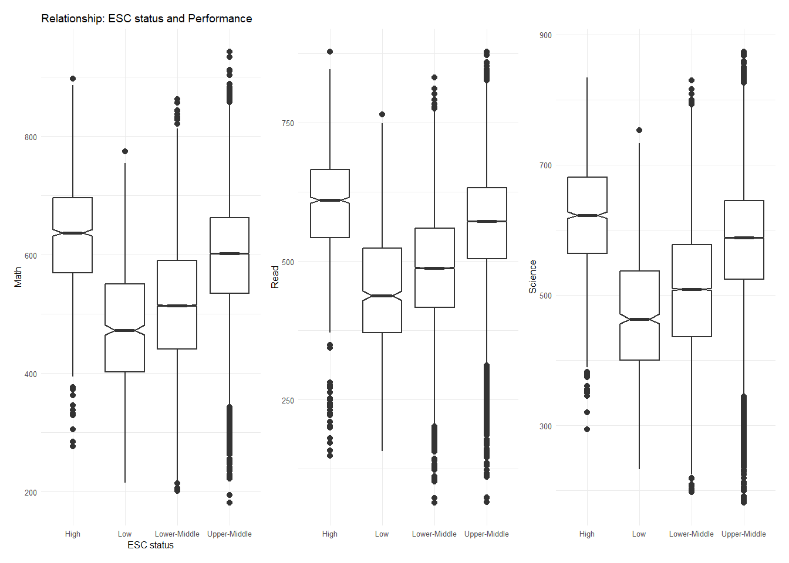

pacman::p_load(tidyverse, haven,
ggrepel, ggthemes,
ggridges, ggdist,
patchwork)Take-home Exercise 2 (Work in Progress)
DataVis Makeover
Overview
In this exercise, we select a peer submission of Take-home Exercise 1, and critique it for clarity and aesthetics. The critique of each visualization will be followed by a suggested data visualization makeover.
Getting started
Load packages
First, we load packages required:
Import data
Next, we import data. The data used in this exercise is the same as the data used in the Take-home Exercise 1.
We import this dataset as stu_qqq_SG:
stu_qqq_SG <- read_rds("data/stu_qqq_SG.rds")Data pre-processing
Since the focus of the exercise is on critiquing the visualizations, instead of the variable selection or data pre-processing, we will first pre-process the data to a similar format used for the original data visualizations.
This is performed in the code chunk below.
Code
# Select columns relating to this analysis
select_df <- stu_qqq_SG[c(3:4,7,26,1039,1167:1196)]
# Combine 10 PVs for each subject
math_long <- select_df %>%
pivot_longer(
cols = contains("MATH"),
names_to = "MATH",
values_to = "MATH_score"
)
math_long <- math_long %>%
arrange(CNTSCHID, CNTSTUID, STRATUM, ST004D01T, ESCS)
math_long_selected <- select(math_long, -contains("READ"), -contains("SCIE"))
read_long <- select_df %>%
pivot_longer(
cols = contains("READ"),
names_to = "READ",
values_to = "READ_score"
)
read_long <- read_long %>%
arrange(CNTSCHID, CNTSTUID, STRATUM, ST004D01T, ESCS)
read_long_selected <- select(read_long, -contains("MATH"), -contains("SCIE"), -one_of(names(math_long_selected)))
scie_long <- select_df %>%
pivot_longer(
cols = contains("SCIE"),
names_to = "SCIENCE",
values_to = "SCIENCE_score"
)
scie_long <- scie_long %>%
arrange(CNTSCHID, CNTSTUID, STRATUM, ST004D01T, ESCS)
scie_long_selected <- select(scie_long, -contains("MATH"), -contains("READ"), -one_of(names(math_long_selected)))
combined_long_df <- bind_cols(math_long_selected, read_long_selected, scie_long_selected)
# Translate column names and Group ESCS status
school_map <- c("SGP01" = "Public/Secondary",
"SGP02" = "Public/Post-secondary",
"SGP03" = "Private/Secondary",
"SGP97" = "Undisclosed")
gender_map <- c("1" = "Female",
"2" = "Male")
clean_df <- combined_long_df %>%
mutate(SCHOOL = school_map[STRATUM],
GENDER = gender_map[ST004D01T],
Math = as.numeric(MATH_score),
Read = as.numeric(READ_score),
Science = as.numeric(SCIENCE_score),
ESC_status = round(((ESCS - min(ESCS, na.rm = TRUE))/
(max(ESCS, na.rm = TRUE)-min(ESCS, na.rm = TRUE)))*100, digits = 0),
ESC_status = case_when(
ESC_status >= 0 & ESC_status < 25 ~ "Low",
ESC_status >= 25 & ESC_status < 50 ~ "Lower-Middle",
ESC_status >= 50 & ESC_status < 75 ~ "Upper-Middle",
ESC_status >= 75 & ESC_status <= 100 ~ "High",
TRUE ~ as.character(ESC_status)
))
# Remove unused columns
clean_short_df <- clean_df %>%
select(-c(CNTSCHID, STRATUM, ST004D01T, ESCS, MATH_score, READ_score, SCIENCE_score))Now that we have the dataframe required, we will move on to reviewing and remaking the 4 visualizations for the exercise.
Visualization 1: Distribution of Performance on each subject
Original Design
This visualization is intended to show the distribution of performance for each subject. This is done using histograms for each subject, along with annotations to provide some statistical detail.
The original design is shown below.

Critique
Clarity
- Choice of plot and annotations: Using histograms to showcase distribution is standard and clear way to displaying performance for each subject and information about modality of the distribution. It is a good effort to add annotations for median, 1st quantile, 3rd quantile and outliers, that provide additional detail that a histogram does not provide.
- Choice of layout: The “2+1” layout is easy to read. However, there is a missed opportunity to make the visualization more insightful. Since all three histograms show performance through plausible values, it could be valuable to place these histograms in a layout that compares the performance distributions.
- Generic plot title: The plot title is generic. A more descriptive and meaningful title, supported by a sub-title, would make the message or insight of the visualization clearer.
- Axes Labeling: The X and Y-axes are not labeled.
- Missing caption: There is no caption indicating the source of the data.
Aesthetics
- Size and formatting of title: The plot title seems to be the same size as the axes label. It would be more beautiful if the title was differentiated perhaps by increased size or by making it bolded.
- Colour of background and plot: The colour choice of the grey histogram on white background is simple and clear.
- Colour of annotations: Using different colours for the annotations is a good way to draw viewers’ attention. However, the choice of bland yellow for the outliers is not easy to see.
- Placement of annotations: The placements of annotations make the numbers difficult to read. Some numbers overlap with the details of the histogram, while others overlap with the ticks on the X-axis.
Alternative Design
A sketch for the alternative design is shown below.
Remake
ggplot(data = clean_short_df,
aes(x= Math))+
geom_histogram(bins=20,
color = "grey40",
fill="grey95",
linewidth = 0.5)
Visualization 2: Relationship b/w Gender and Performance
Original Design
This visualization is intended to showcase the relationship between gender and performance for each subject. This is done using density plots for each subject, colouring the overlapping density plots by gender
The original design is shown below.

Critique
Clarity
Choice of layout: While the “2+1” layout is easy to read, it would be more insightful if all density plots are arranged in a way that the performance across subjects can be compared.
Annotations: Using text annotations alongside filling specific areas of the density plot to highlight the main differences in genders is very insightful.
Axes labeling: The X axes were not labeled.
Generic plot title: The plot title is generic. A more descriptive and meaningful title, supported by a sub-title, would make the message or insight of the visualization clearer.
Aesthetics
Colour choice for fill: Good use of contrasting colours to differentiate between density plots for Female and Male.
Size and formatting of title: The plot title seems to be the same size as the axes label. It would be more beautiful if the title was differentiated perhaps by increased size or by making it bolded.
Alternative Design
Remake
Visualization 3: Relationship b/w school types and performance
Original Design
This visualization is intended to showcase the relationship between school type and performance for each subject. For each subject, two boxplots representing the two types of school (public and private) are plotted.
The original design is shown below.

Critique
Clarity
Generic plot title: The plot title is generic. A more descriptive and meaningful title, supported by a sub-title, would make the message or insight of the visualization clearer.
Axes scales: The Y-axis scales are not consistent across the subjects. It is important to make these scales consistent to ensure they are comparable. Else, placing the plots side by side would not be insightful.
Notches in boxplots: Notches are intended to make the differences in median of boxplots clearer. However, the notches in this visualization do not contribute to additional clarity due to lack of depth of the notches.
Aesthetics
Choice of layout and colour: The plots for the subjects are put together using patchwork. It would be neater if the plots for the subjects are done on a single ggplot item, and the school types are differentiated using colour.
Size and formatting of title: The plot title seems to be the same size as the axes label. It would be more beautiful if the title was differentiated perhaps by increased size or by making it bolded.
Alternative Design
Remake
Visualization 4: Relationship b/w socioeconomic status and performance
Original Design

Critique
Clarity
Generic plot title: The plot title is generic. A more descriptive and meaningful title, supported by a sub-title, would make the message or insight of the visualization clearer.
X-axis labeling: The order of the categorical variables is not intuitive or sorted,since it goes from High -> Low -> Lower-Middle -> Upper-Middle. Ordering these variables will not only make the plot more intuitive for a viewer but also help to clearly communicate the key trend in this visualization.
Y-axis scale: The scale for Y-axis is inconsistent across the plots. This makes comparing across the subjects inaccurate.
Aesthetics
Size and formatting of title: The plot title seems to be the same size as the axes label. It would be more beautiful if the title was differentiated perhaps by increased size or by making it bolded.
Y-axis title orientation: The Y-axis titles are written in vertical direction, which makes it difficult to read for a viewer.
X-axis title position: The X-axis title is flushed to the left of the plot. It would be more aesthetic if the title is centered.